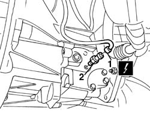
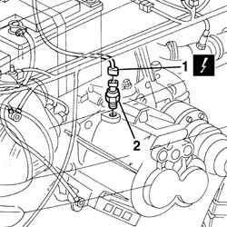

5550D22 reversing light switch - r+r
- Path
- Procedures > 55 ELECTRICAL EQUIPMENT > 5550 MANOEUVRING AND WARNING SIGNALS > 5550D brake and reversing lights > 5550D22 reversing light switch - r+r
- Kind
- repair procedure (removal / refitting; the operation number is the code)
- Applies to
- engines: 1.6 TS , 1.8 TS, 2.5 V6, 1.9 JTD 8v , 2.4 JTD 10v; all production periods
- Interactive page
- https://sloeber94.github.io/elrnDB-a156/en/#/3238492
Applies to: engines: 1.6 TS , 1.8 TS; all production periods
 Removing
Removing
 Refitting
RefittingPlace the car on an auto lift.
1. Lift the car and disconnect the electrical connection of the reserving light switch.
 | Name | Connector |
|---|---|---|
1 | Reversing lights switch |
2. Unscrew and take the reserve light switch off.

Applies to: engines: 1.6 TS , 1.8 TS; all production periods
Refitting
RemovingCheck that the switch is not damaged and, if necessary, test its electrical functionality.
Screw the reserving light switch.
Connect the electrical connection of the reserving light switch.
Move the car from the auto lift.
Test the functionality of the reserving light.
Applies to: engines: 2.5 V6, 1.9 JTD 8v , 2.4 JTD 10v; all production periods
Removing
Refitting5530B52 Battery DRIP TRAY/SUPPORT - R.R.
1. Disconnect the electrical connection of the IU+2019 reserving light switch.
| Name | Connector |
|---|---|---|
1 | Reversing lights switch |
2. Unscrew and take IU+2019 reserving light switch off.

Applies to: engines: 2.5 V6, 1.9 JTD 8v , 2.4 JTD 10v; all production periods
Refitting
RemovingCheck that the IU+2019 switch is not damaged and, if necessary, test its electrical functionality.
Screw the IU+2019 reserving light switch.
Connect the electrical connection of the IU+2019 reserving light switch.
Take the car off from the auto lift.
Test the functionalityof the reserving light .